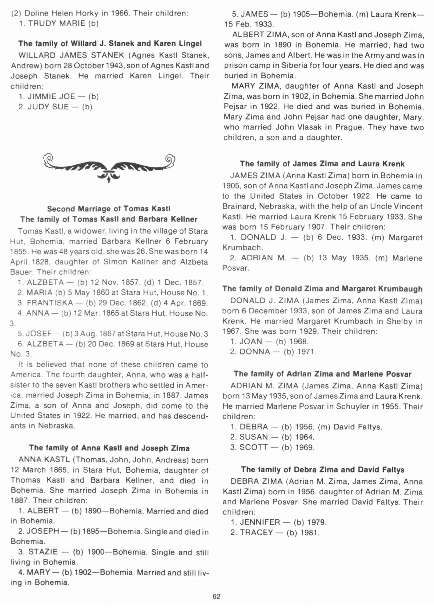
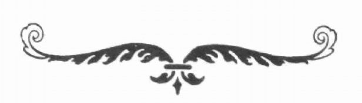

The book · Second Marriage of Thomas Kastl; The Family of Anna Kastl Zima
Page 62 The family of Willard J. Stanek and Karen Lingel


Transcription
(2) Doline Helen Horky in 1966. Their children:
- TRUDY MARIE (b)
The family of Willard J. Stanek and Karen Lingel
WILLARD JAMES STANEK (Agnes Kastl Stanek, Andrew) born 28 October 1943, son of Agnes Kastl and Joseph Stanek. He married Karen Lingel. Their children:
- JIMMIE JOE — (b)
- JUDY SUE — (b)


Second Marriage of Tomas Kastl
The family of Tomas Kastl and Barbara Kellner
Tomas Kastl, a widower, living in the village of Stara Hut, Bohemia, married Barbara Kellner 6 February 1855. He was 48 years old, she was 26. She was born 14 April 1828, daughter of Simon Kellner and Alzbeta Bauer. Their children:
- ALZBETA — (b) 12 Nov. 1857. (d) 1 Dec. 1857.
- MARIA (b) 5 May 1860 at Stara Hut, House No. 1.
- FRANTISKA — (b) 29 Dec. 1862. (d) 4 Apr. 1869.
- ANNA — (b) 12 Mar. 1865 at Stara Hut, House No. 3.
- JOSEF — (b) 3 Aug. 1867 at Stara Hut, House No. 3
- ALZBETA — (b) 20 Dec. 1869 at Stara Hut, House No. 3.
It is believed that none of these children came to America. The fourth daughter, Anna, who was a half-sister to the seven Kastl brothers who settled in America, married Joseph Zima in Bohemia, in 1887. James Zima, a son of Anna and Joseph, did come to the United States in 1922. He married, and has descendants in Nebraska.
The family of Anna Kastl and Joseph Zima
ANNA KASTL (Thomas, John, John, Andreas) born 12 March 1865, in Stara Hut, Bohemia, daughter of Thomas Kastl and Barbara Kellner, and died in Bohemia. She married Joseph Zima in Bohemia in 1887. Their children:
- ALBERT — (b) 1890—Bohemia. Married and died in Bohemia.
- JOSEPH — (b) 1895—Bohemia. Single and died in Bohemia.
- STAZIE — (b) 1900—Bohemia. Single and still living in Bohemia.
- MARY — (b) 1902—Bohemia. Married and still living in Bohemia.
- JAMES — (b) 1905—Bohemia. (m) Laura Krenk—15 Feb. 1933.
ALBERT ZIMA, son of Anna Kastl and Joseph Zima, was born in 1890 in Bohemia. He married, had two sons, James and Albert. He was in the Army and was in prison camp in Siberia for four years. He died and was buried in Bohemia.
MARY ZIMA, daughter of Anna Kastl and Joseph Zima, was born in 1902, in Bohemia. She married John Pejsar in 1922. He died and was buried in Bohemia. Mary Zima and John Pejsar had one daughter, Mary, who married John Vlasak in Prague. They have two children, a son and a daughter.
The family of James Zima and Laura Krenk
JAMES ZIMA (Anna Kastl Zima) born in Bohemia in 1905, son of Anna Kastl and Joseph Zima. James came to the United States in October 1922. He came to Brainard, Nebraska, with the help of an Uncle Vincent Kastl. He married Laura Krenk 15 February 1933. She was born 15 February 1907. Their children:
- DONALD J. — (b) 6 Dec. 1933. (m) Margaret Krumbach.
- ADRIAN M. — (b) 13 May 1935. (m) Marlene Posvar.
The family of Donald Zima and Margaret Krumbaugh
DONALD J. ZIMA (James Zima, Anna Kastl Zima) born 6 December 1933, son of James Zima and Laura Krenk. He married Margaret Krumbach in Shelby in 1967. She was born 1929. Their children:
- JOAN — (b) 1968.
- DONNA — (b) 1971.
The family of Adrian Zima and Marlene Posvar
ADRIAN M. ZIMA (James Zima, Anna Kastl Zima) born 13 May 1935, son of James Zima and Laura Krenk. He married Marlene Posvar in Schuyler in 1955. Their children:
- DEBRA — (b) 1956. (m) David Faltys.
- SUSAN — (b) 1964.
- SCOTT — (b) 1969.
The family of Debra Zima and David Faltys
DEBRA ZIMA (Adrian M. Zima, James Zima, Anna Kastl Zima) born in 1956, daughter of Adrian M. Zima and Marlene Posvar. She married David Faltys. Their children:
- JENNIFER — (b) 1979.
- TRACEY — (b) 1981.
People from the line of descent on this page
- Thomas Kastl b. 1806
- Barbara Kellner b. 1828
- Elizabeth Pankraz or Alzbeta Bauer
- Alzbeta Kastl 1857–1857
- Maria Kastl b. 1860
- Frantiska Kastl 1862–1869
- Josef Kastl b. 1867
- Alzbeta Kastl b. 1869
- Anna Kastl b. 1865
Transcriber’s notes
Opens mid-sentence finishing the Leonard John Stanek entry from the previous page ('(2) Doline Helen Horky in 1966...'). A decorative ornament separates the Andrew Kastl line from the new section 'Second Marriage of Tomas Kastl'. Child list for Anna Kastl and Joseph Zima continues from the bottom of the left column (items 1-4) to the top of the right column (item 5). Heading spells 'Krumbaugh' while text spells 'Krumbach' — both kept as printed. 'Tomas'/'Thomas' both used as printed. Stanek grandchildren have '(b)' with no dates.